아이의 키와 몸무게를 기록하면 공식 성장도표를 기준으로 키·몸무게·BMI 백분위와 성장곡선, 그리고 예상 성인 키까지 한눈에 확인할 수 있어요.
아이의 성장을 기록하고, 조금씩 달라지는 모습을 만나보세요.
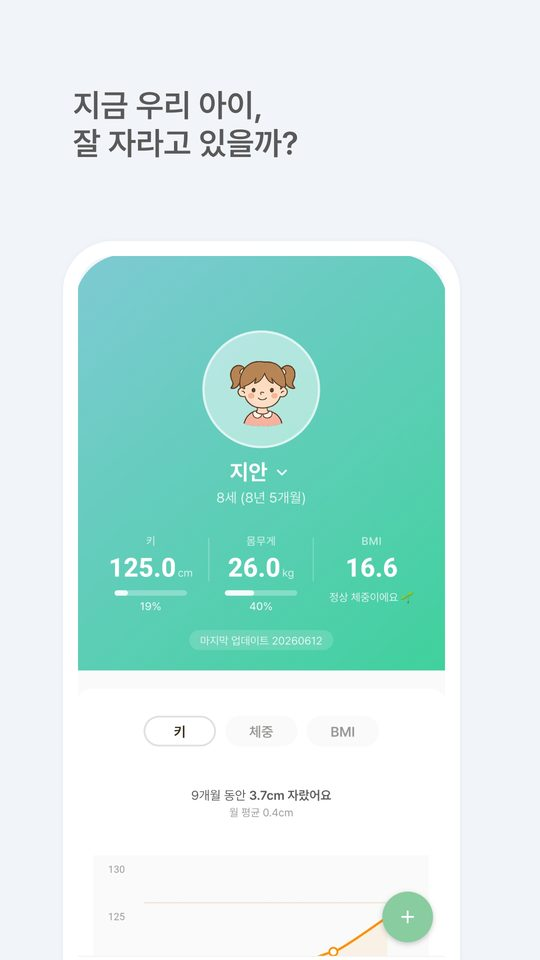
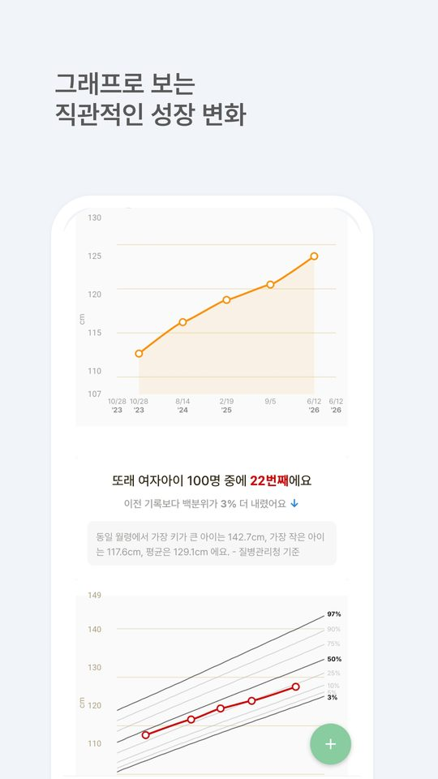
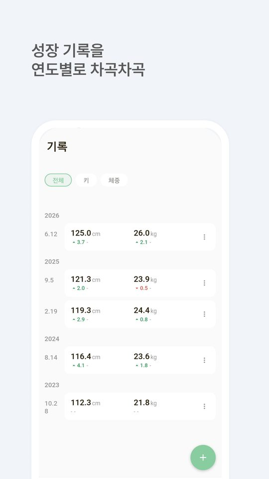
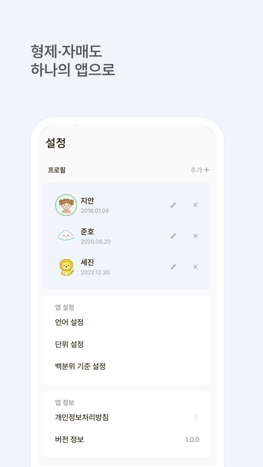
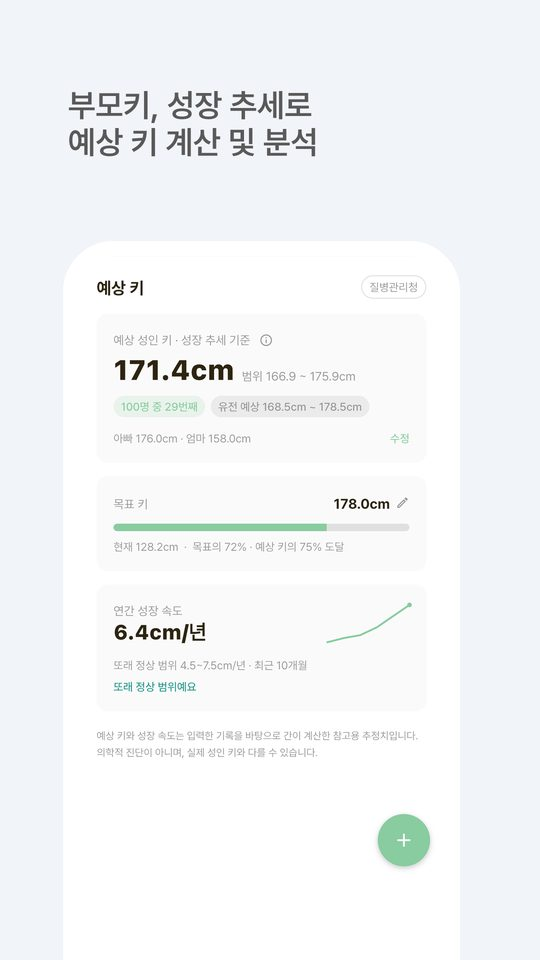
← 옆으로 넘겨 보세요 →
키·몸무게·BMI가 같은 개월 수 또래 100명 중 몇 번째인지 곡선으로 보여줘요.
부모님 키와 성장 추세로 예상 성인 키를 오차 범위와 함께 알려줘요.
지난 기록과 얼마나 자랐는지 한눈에 정리돼요.
홈 화면에서 키·몸무게·BMI·백분위를 바로 확인해요.
아이마다 프로필·기록·차트를 따로 관리해요.
계정이 없어요. 아이 정보는 서버로 전송되지 않아요.
아이를 키우다 보면 별것 아닌 것 같은 숫자 하나에도 마음이 쓰일 때가 있어요.
"우리 아이, 잘 크고 있는 걸까?" "또래 아이들과 비교하면 어느 정도일까?" 검진을 다녀온 날이면 성장도표를 찾아보기도 하고, 지난 기록을 다시 들여다보기도 했어요.
그런데 막상 찾아보면 어렵고 복잡해서 필요한 정보를 한눈에 살펴보기가 쉽지 않았어요.
그래서 그냥, 제가 쓰고 싶은 걸 직접 만들어보기로 했어요. 공식 성장도표를 바탕으로 아이의 기록을 차곡차곡 남기고, 지금까지 얼마나 자랐는지 한눈에 볼 수 있도록요.
매일의 키가 특별해 보이지 않을 수도 있지만, 돌아보면 그 숫자 하나하나가 우리 아이가 자라온 시간이더라고요.
Grovii가 아이의 성장을 조금 더 편안한 마음으로 바라볼 수 있게 도와주는 작은 기록장이 되었으면 좋겠습니다.
같은 마음으로 아이를 키우는 모든 부모님께 도움이 되기를 바라요.
나라별 공식 성장도표를 골라 쓸 수 있어요 — 질병관리청(한국), WHO, CDC(미국), 후생노동성(일본), 국가위생건강위원회(중국), UK90(영국). 나이는 성장도표와 동일하게 만 개월 수로 계산합니다.
정말 무료인가요?
네. Grovii는 무료로 사용할 수 있어요. 광고로 운영되며, 아이의 성장 정보는 광고에 사용하지 않습니다.
예상 키는 정확한가요?
예상 성인 키는 아이의 현재 성장 추세와 부모님의 키를 바탕으로 계산한 참고용 추정치예요. 아이의 성장이나 건강에 대한 정확한 판단이 필요한 경우에는 소아청소년과 전문의와 상담해 주세요.
어떤 성장도표를 사용하나요?
한국 질병관리청, WHO, CDC 등 공식 성장도표를 선택해서 사용할 수 있어요.
아이의 정보는 안전한가요?
회원가입이 필요하지 않고, 성장 기록은 사용자의 기기에만 저장됩니다. 자세한 내용은 개인정보처리방침을 참고하세요.
Log your child's height and weight, and see height, weight and BMI percentiles, the growth curve, and even a predicted adult height at a glance — all against official growth charts.
Record your child's growth, and watch how they change, little by little.
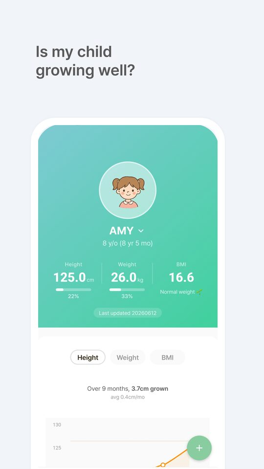
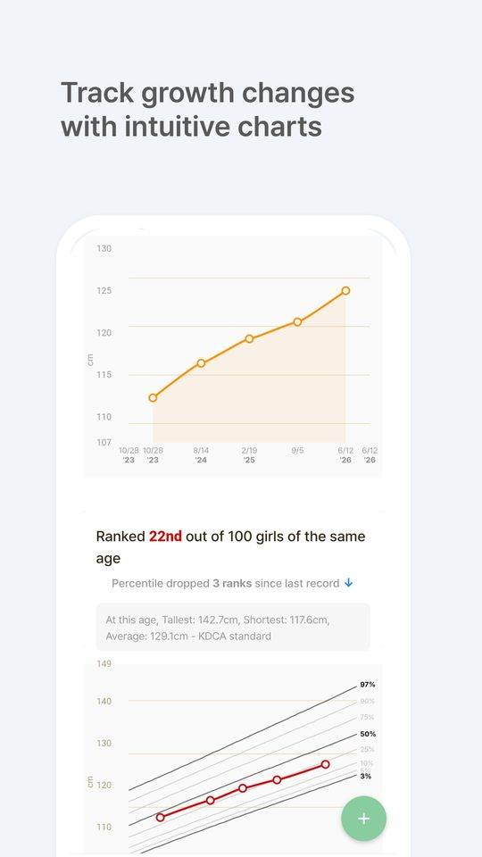
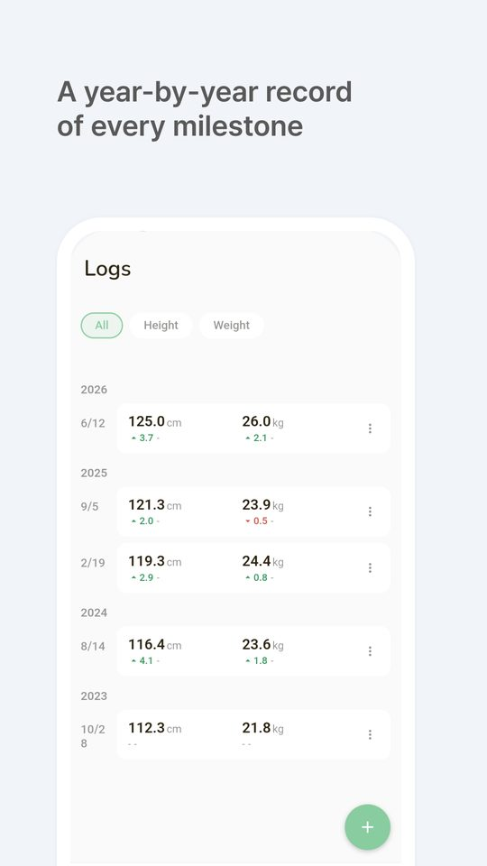
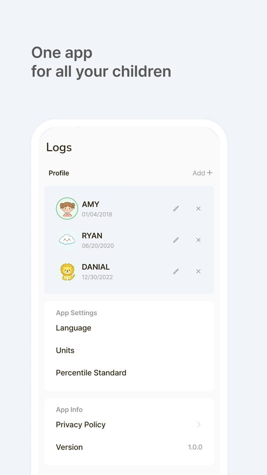
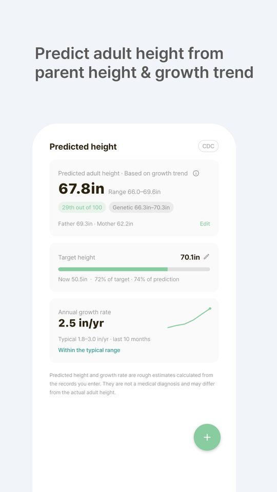
← swipe →
See where height, weight and BMI rank among 100 children of the same age in months.
An estimated adult height from parents' heights and the growth trend, with a margin of error.
Every past measurement and how much your child has grown, at a glance.
Height, weight, BMI and percentile right on the home screen.
Each child gets its own profile, records and charts.
No account. Your child's data is never sent to our servers.
When you're raising a child, sometimes even a small, ordinary number can weigh on your mind.
"Is my child growing well?" "How does that compare with other kids their age?" On the days after a check-up, I would look up growth charts, or go back through our old records.
But when I actually looked, it was hard and complicated — not easy to take in the information I needed at a glance.
So I decided to just build the thing I wanted to use myself. Something that keeps my child's records one by one, based on the official growth charts, and lets me see how much they've grown so far, all in one view.
A single day's height might not seem like much. But looking back, each of those numbers is time my child has spent growing.
I hope Grovii can be a small logbook that helps you look at your child's growth with a little more peace of mind.
And I hope it helps every parent raising a child with the same heart.
Choose the official growth chart you trust — WHO, CDC (US), KDCA (Korea), MHLW (Japan), NHC (China), UK90 (UK). Age is counted in completed months, exactly like the charts themselves.
Is it really free?
Yes. Grovii is free to use. It's ad-supported, and your child's growth information is never used for ads.
Is the predicted height accurate?
The predicted adult height is a reference estimate calculated from your child's current growth trend and the parents' heights. If you need an accurate assessment of your child's growth or health, please consult a pediatrician.
Which growth charts do you use?
You can choose official growth charts such as Korea's KDCA, WHO and CDC.
Is my child's data safe?
No sign-up is required, and growth records are stored only on your device. See the Privacy Policy for details.
お子さまの身長・体重を記録すると、公式の成長曲線をもとに身長・体重・BMIのパーセンタイルと成長曲線、そして予想身長までひと目で確認できます。
お子さまの成長を記録して、少しずつ変わっていく姿に出会ってください。
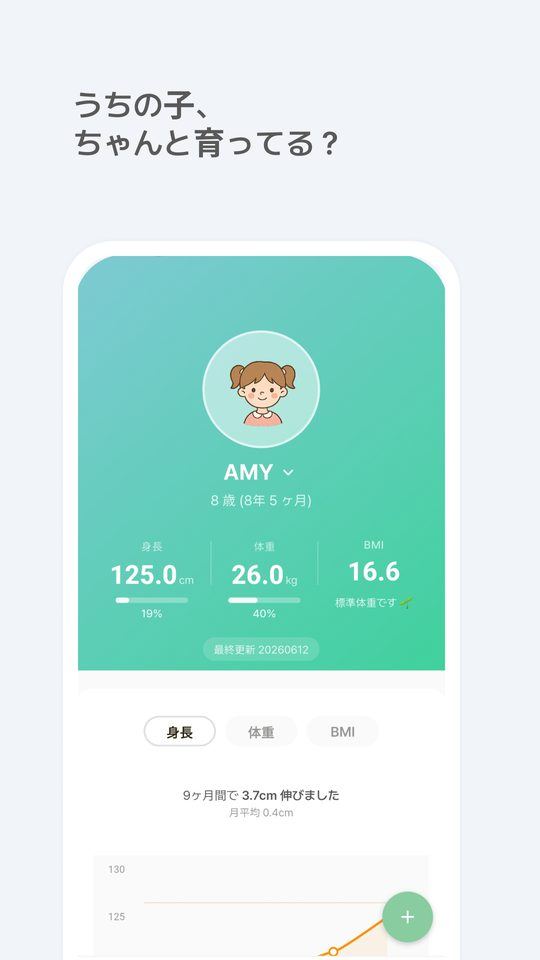
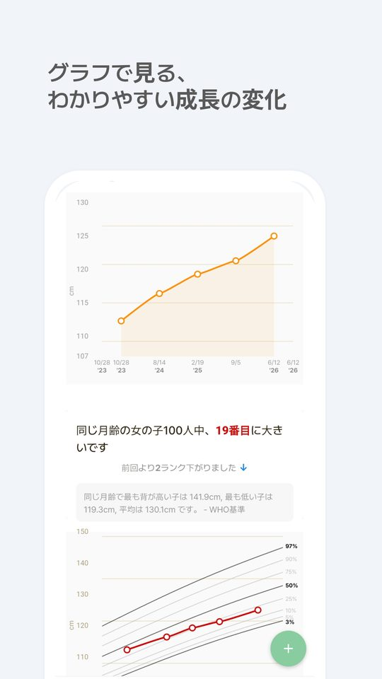
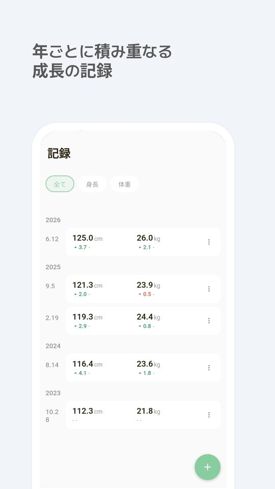
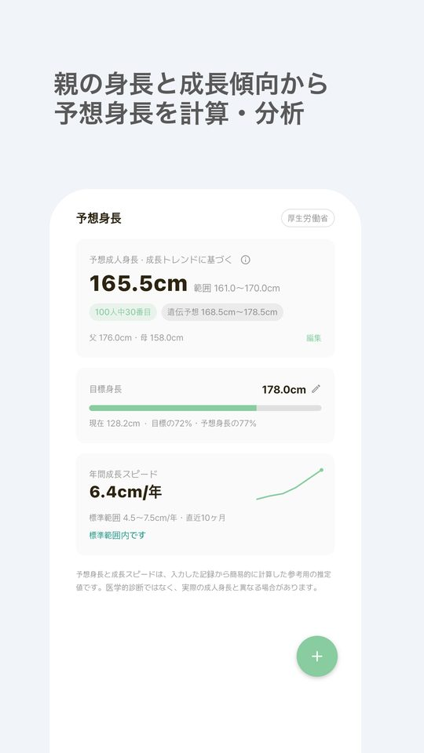
← スワイプ →
身長・体重・BMIが同月齢100人中の何番目かを曲線で表示。
ご両親の身長と成長傾向から、予想身長を誤差幅つきで。
これまでの記録とどれだけ伸びたかが一目で。
ホーム画面で身長・体重・BMI・パーセンタイルをすぐ確認。
お子さまごとにプロフィール・記録・グラフを管理。
アカウント不要。お子さまの情報はサーバーに送信されません。
子どもを育てていると、なんでもないような数字ひとつに心が動くことがあります。
「うちの子、ちゃんと育っているのかな」「同年齢の子と比べてどのくらいだろう」。検診から帰った日は成長曲線を調べたり、これまでの記録を見返したりしていました。
でも実際に調べてみると難しくて複雑で、必要な情報をひと目で把握するのは簡単ではありませんでした。
それなら、自分が使いたいものを自分でつくってみようと思ったんです。公式の成長曲線をもとに、子どもの記録をひとつずつ残して、これまでどれだけ伸びたかをひと目で見られるように。
毎日の身長は特別に見えないかもしれません。でも振り返ると、その数字のひとつひとつが、子どもが育ってきた時間でした。
Grovii が、子どもの成長をもう少し穏やかな気持ちで見守れるように手伝う、小さな記録帳になればうれしいです。
同じ気持ちで子どもを育てるすべての親御さんの役に立ちますように。
国ごとの公式成長曲線を選べます — 厚生労働省(日本)、WHO、CDC(米国)、疾病管理庁(韓国)、国家衛生健康委員会(中国)、UK90(英国)。年齢は成長曲線と同じく満月齢で計算します。
本当に無料ですか？
はい。Grovii は無料で使えます。広告で運営しており、お子さまの成長情報を広告に使うことはありません。
予想身長は正確ですか？
予想身長は、お子さまの現在の成長傾向とご両親の身長をもとに計算した参考値です。お子さまの成長や健康について正確な判断が必要な場合は、小児科医にご相談ください。
どの成長曲線を使いますか？
韓国疾病管理庁、WHO、CDC などの公式成長曲線から選んで使えます。
お子さまの情報は安全ですか？
会員登録は不要で、成長記録はお使いの端末にのみ保存されます。詳しくはプライバシーポリシーをご覧ください。
记录孩子的身高体重，就能以官方生长曲线为准，一屏看清身高、体重、BMI 百分位、生长曲线，以及预测成年身高。
记录孩子的成长，遇见他一点点变化的样子。
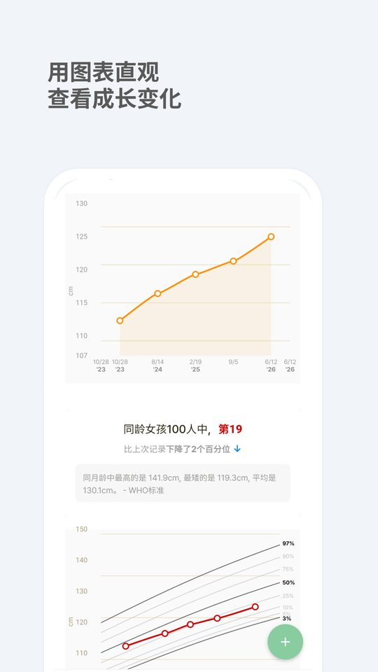
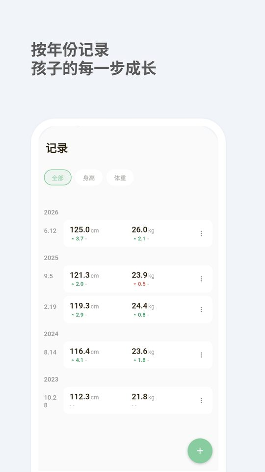
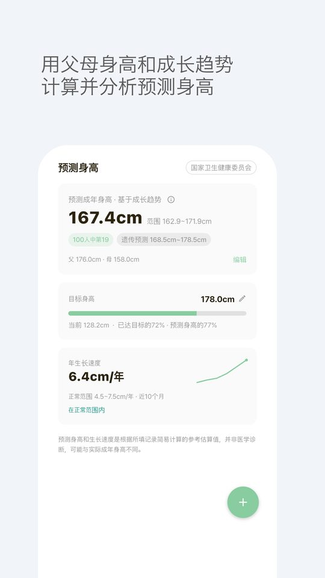
← 左右滑动 →
身高、体重、BMI 在同月龄 100 人中排第几，用曲线呈现。
依据父母身高和成长趋势，给出带误差范围的预测成年身高。
过往记录和长高了多少，一目了然。
主页直接查看身高、体重、BMI 和百分位。
每个孩子独立的资料、记录和图表。
无需账号，孩子的信息不会上传到服务器。
养孩子的时候，有时一个看似平常的数字也会让人挂在心上。
"我的孩子，长得好吗？""和同龄的孩子比，大概在什么位置？"体检回来的那天，我会去查生长曲线，也会翻看以前的记录。
可真去查的时候，又难又复杂，想一眼看清需要的信息并不容易。
于是我干脆决定，自己动手做一个自己想用的。以官方生长曲线为基础，把孩子的记录一点点留下来，让"到现在长了多少"一屏就能看明白。
每天的身高也许看起来没什么特别。可回过头看，那一个个数字，都是孩子成长的时光。
希望 Grovii 能成为一本小小的记录本，帮你用更从容的心情看待孩子的成长。
也希望它能帮到每一位怀着同样心情养育孩子的父母。
可选择各国官方生长曲线 — 国家卫生健康委员会(中国)、WHO、CDC(美国)、疾病管理厅(韩国)、厚生劳动省(日本)、UK90(英国)。年龄与生长曲线一致，按足月龄计算。
真的免费吗？
是的。Grovii 可以免费使用。通过广告运营，孩子的成长信息不会用于广告。
预测身高准确吗？
预测成年身高是根据孩子当前的成长趋势和父母身高计算的参考估算值。如需对孩子的成长或健康做准确判断，请咨询儿科医生。
使用哪种生长曲线？
可从韩国疾病管理厅、WHO、CDC 等官方生长曲线中选择使用。
孩子的信息安全吗？
无需注册，成长记录仅保存在用户的设备上。详见隐私政策。
Catat tinggi dan berat anak Anda, lalu lihat persentil tinggi, berat, dan BMI, kurva pertumbuhan, bahkan perkiraan tinggi dewasa — semuanya berdasarkan kurva pertumbuhan resmi, dalam satu layar.
Catat pertumbuhan anak Anda, dan temui perubahannya sedikit demi sedikit.
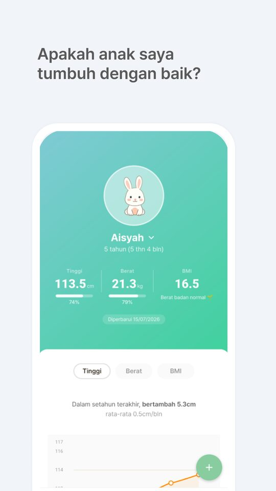
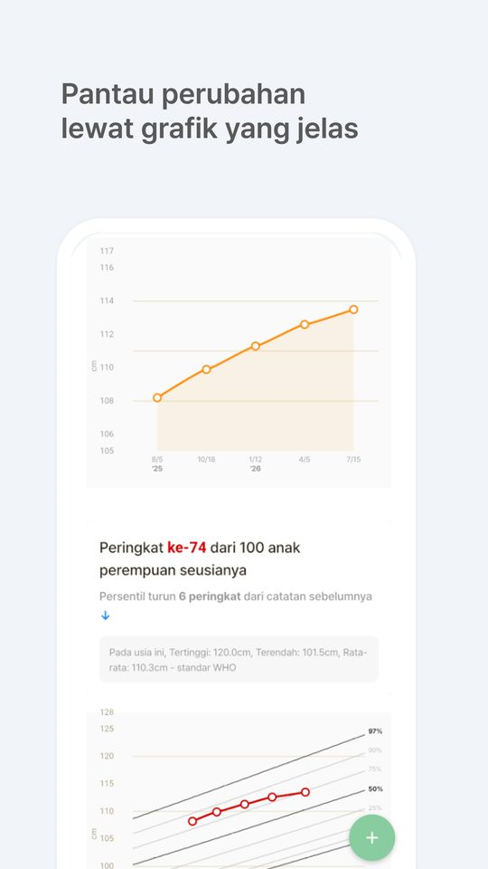
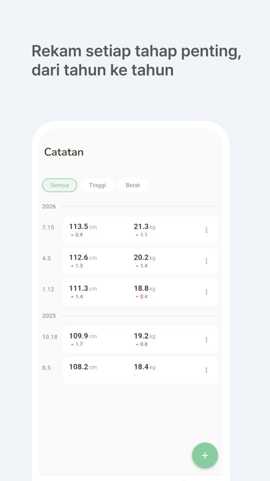
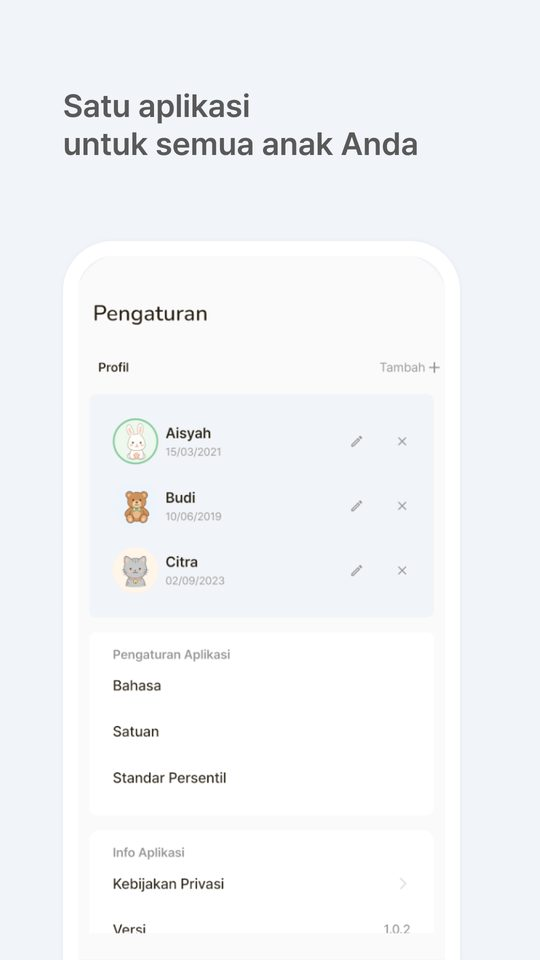
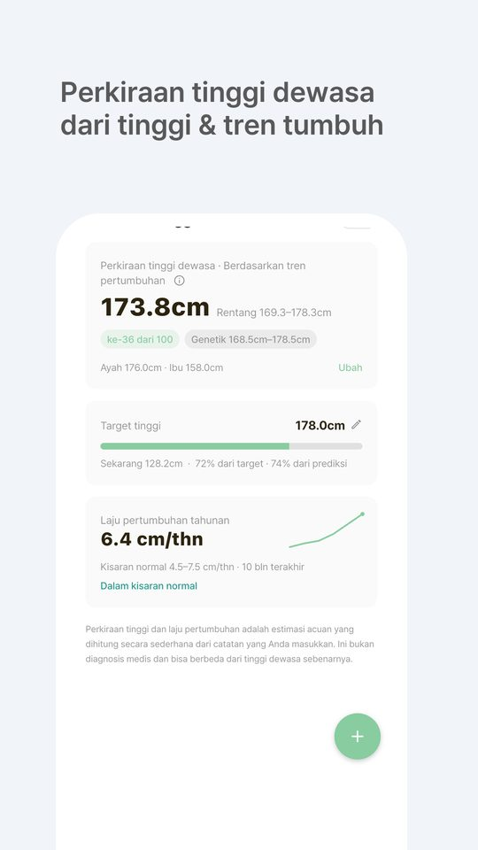
← geser →
Lihat peringkat tinggi, berat, dan BMI di antara 100 anak seusia (dalam bulan).
Perkiraan tinggi dewasa dari tinggi orang tua dan tren pertumbuhan, dengan rentang galat.
Semua catatan lama dan seberapa besar pertumbuhannya, sekilas.
Tinggi, berat, BMI, dan persentil langsung di layar utama.
Tiap anak punya profil, catatan, dan grafik sendiri.
Tanpa akun. Data anak tidak pernah dikirim ke server kami.
Saat membesarkan anak, kadang satu angka yang tampak biasa pun bisa terasa mengganjal di hati.
"Anak saya tumbuh dengan baik, tidak ya?" "Kalau dibandingkan dengan anak seusianya, kira-kira di mana?" Sepulang dari kontrol, saya mencari kurva pertumbuhan, atau membuka lagi catatan lama.
Tapi begitu benar-benar dicari, ternyata sulit dan rumit — tidak mudah melihat informasi yang saya butuhkan sekaligus.
Jadi saya putuskan untuk membuat sendiri hal yang ingin saya pakai. Berdasarkan kurva pertumbuhan resmi, menyimpan catatan anak satu per satu, dan menampilkan seberapa besar pertumbuhannya sampai sekarang dalam satu layar.
Tinggi badan tiap hari mungkin tampak biasa saja. Tapi kalau ditengok kembali, tiap angka itu adalah waktu tumbuhnya anak kita.
Semoga Grovii bisa menjadi buku catatan kecil yang membantu Anda memandang pertumbuhan anak dengan hati yang sedikit lebih tenang.
Semoga bermanfaat bagi semua orang tua yang membesarkan anak dengan hati yang sama.
Pilih kurva pertumbuhan resmi per negara — WHO, CDC (AS), KDCA (Korea), MHLW (Jepang), NHC (Tiongkok), UK90 (Inggris). Usia dihitung dalam bulan penuh, sama seperti kurvanya.
Benar-benar gratis?
Ya. Grovii bisa dipakai gratis. Didanai iklan, dan informasi pertumbuhan anak tidak pernah dipakai untuk iklan.
Apakah perkiraan tingginya akurat?
Perkiraan tinggi dewasa adalah estimasi acuan yang dihitung dari tren pertumbuhan anak saat ini dan tinggi orang tua. Jika Anda butuh penilaian akurat tentang pertumbuhan atau kesehatan anak, konsultasikan ke dokter anak.
Kurva pertumbuhan mana yang dipakai?
Anda dapat memilih kurva pertumbuhan resmi seperti KDCA Korea, WHO, dan CDC.
Apakah data anak aman?
Tidak perlu mendaftar, dan catatan pertumbuhan hanya disimpan di perangkat Anda. Lihat Kebijakan Privasi untuk detail.
سجِّل طول ووزن طفلك، لترى مئين الطول والوزن ومؤشر كتلة الجسم، ومنحنى النمو، وحتى الطول المتوقع عند البلوغ — كل ذلك وفق منحنيات النمو الرسمية، في شاشة واحدة.
سجِّل نموّ طفلك، وتعرّف على ملامحه وهي تتغيّر شيئًا فشيئًا.
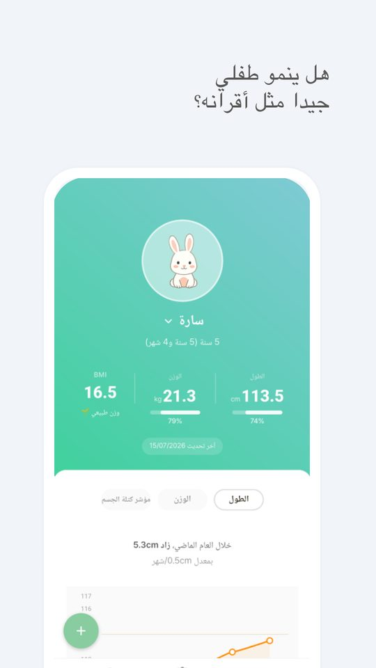
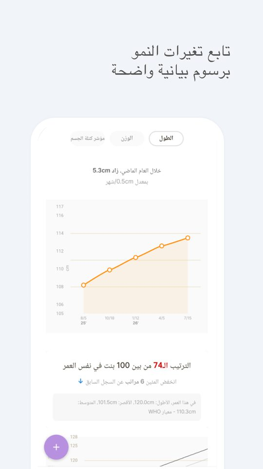
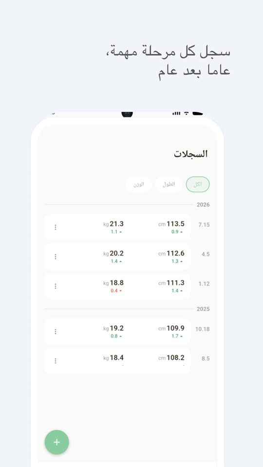
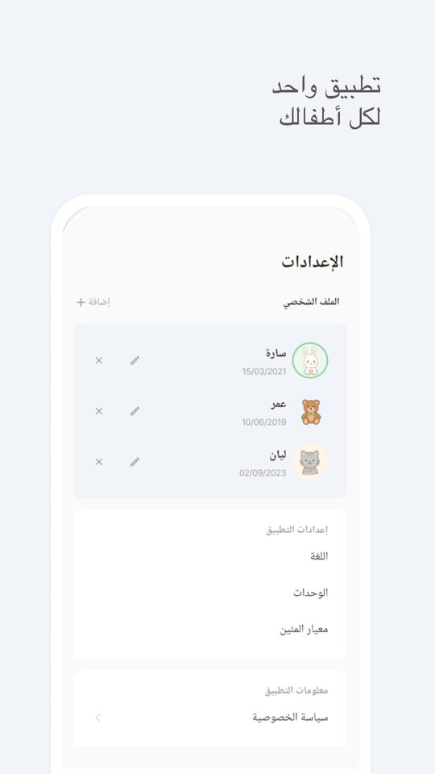
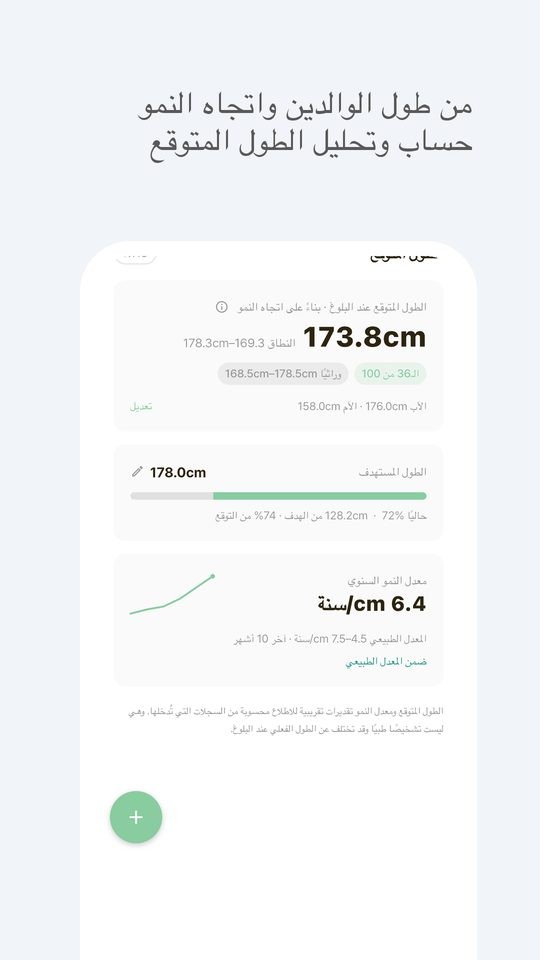
← اسحب →
شاهِد ترتيب الطول والوزن ومؤشر كتلة الجسم بين 100 طفل بالعمر نفسه (بالأشهر).
طول متوقع عند البلوغ من طول الوالدين واتجاه النمو، مع هامش خطأ.
كل السجلات السابقة ومقدار النمو، في لمحة.
الطول والوزن ومؤشر كتلة الجسم والمئين مباشرة على الشاشة الرئيسية.
لكل طفل ملفه وسجلاته ورسومه البيانية.
بلا حساب. لا تُرسَل بيانات طفلك إلى خوادمنا أبدًا.
حين تربّي طفلًا، قد يشغل بالَك أحيانًا رقمٌ يبدو عاديًا.
"هل ينمو طفلي جيدًا؟" "وأين موقعه مقارنةً بأقرانه؟" في اليوم الذي أعود فيه من الفحص، كنت أبحث في منحنيات النمو، وأعود إلى السجلات السابقة.
لكن حين أبحث فعلًا، أجده صعبًا ومعقّدًا، وليس من السهل أن أرى المعلومات التي أحتاجها دفعةً واحدة.
فقرّرت ببساطة أن أصنع بنفسي ما أودّ استخدامه. اعتمادًا على منحنيات النمو الرسمية، أحفظ سجلات طفلي واحدًا تلو الآخر، وأرى في شاشة واحدة كم نما حتى الآن.
قد لا يبدو طول يومٍ واحد شيئًا مميزًا. لكن حين أنظر إلى الوراء، أرى أن كل رقمٍ منها هو وقتٌ نما فيه طفلي.
أتمنّى أن يكون Grovii دفترًا صغيرًا يساعدك على النظر إلى نمو طفلك بقلبٍ أكثر طمأنينة.
وأتمنّى أن يفيد كل أمّ وأبٍ يربّون أطفالهم بالقلب نفسه.
اختَر منحنى النمو الرسمي حسب بلدك — WHO، وCDC (الولايات المتحدة)، وKDCA (كوريا)، وMHLW (اليابان)، وNHC (الصين)، وUK90 (المملكة المتحدة). يُحسب العمر بالأشهر المكتملة، تمامًا مثل المنحنيات.
هل هو مجاني فعلًا؟
نعم. يمكن استخدام Grovii مجانًا. يعتمد على الإعلانات، ولا تُستخدَم معلومات نمو طفلك في الإعلانات.
هل الطول المتوقع دقيق؟
الطول المتوقع عند البلوغ تقدير استرشادي يُحسب من اتجاه نمو طفلك الحالي وطول الوالدين. وإذا احتجت إلى تقييم دقيق لنمو طفلك أو صحته، فاستشِر طبيب أطفال.
ما منحنيات النمو المستخدَمة؟
يمكنك الاختيار من منحنيات النمو الرسمية مثل KDCA الكورية وWHO وCDC.
هل بيانات طفلي آمنة؟
لا حاجة إلى إنشاء حساب، وتُخزَّن سجلات النمو على جهازك فقط. اطّلِع على سياسة الخصوصية للتفاصيل.
Registra la altura y el peso de tu hijo, y consulta de un vistazo los percentiles de altura, peso e IMC, la curva de crecimiento e incluso una altura adulta prevista, todo según curvas de crecimiento oficiales.
Registra el crecimiento de tu hijo y descubre cómo cambia, poco a poco.
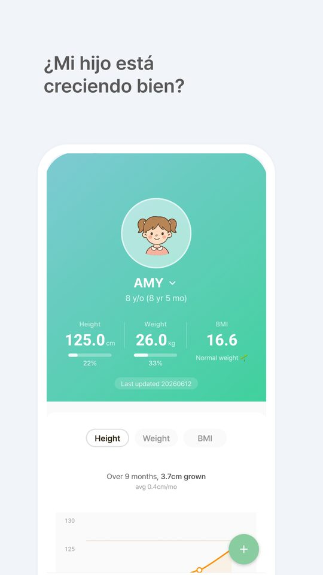
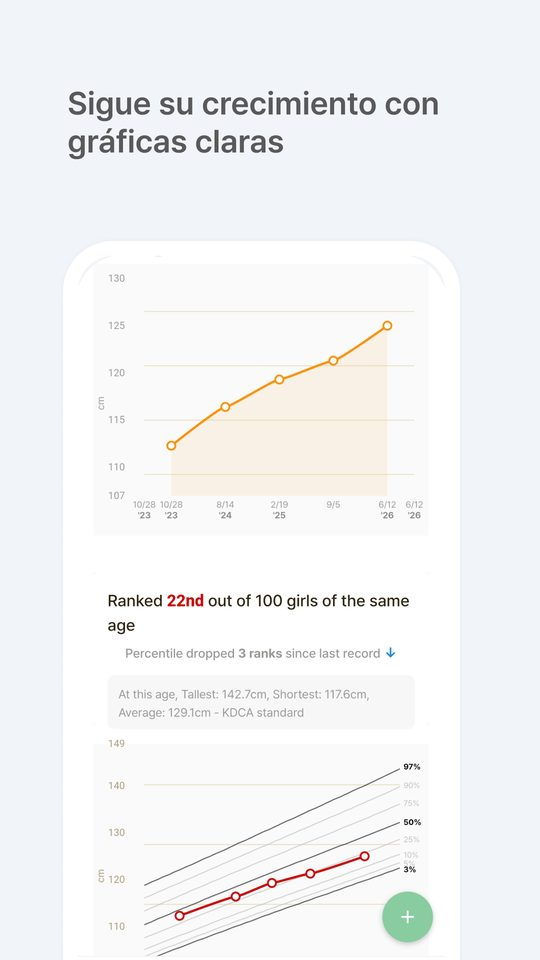
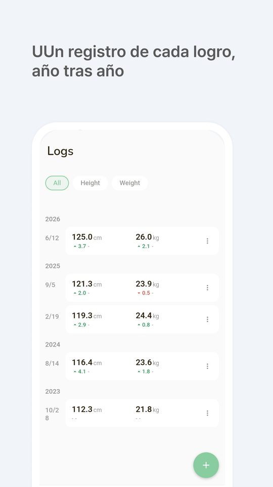
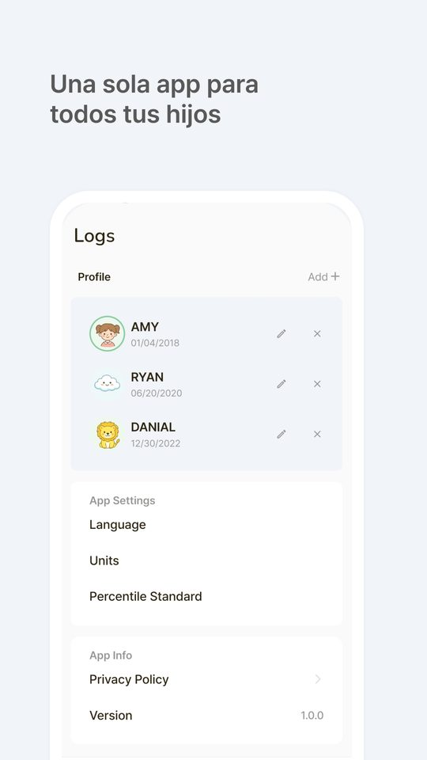
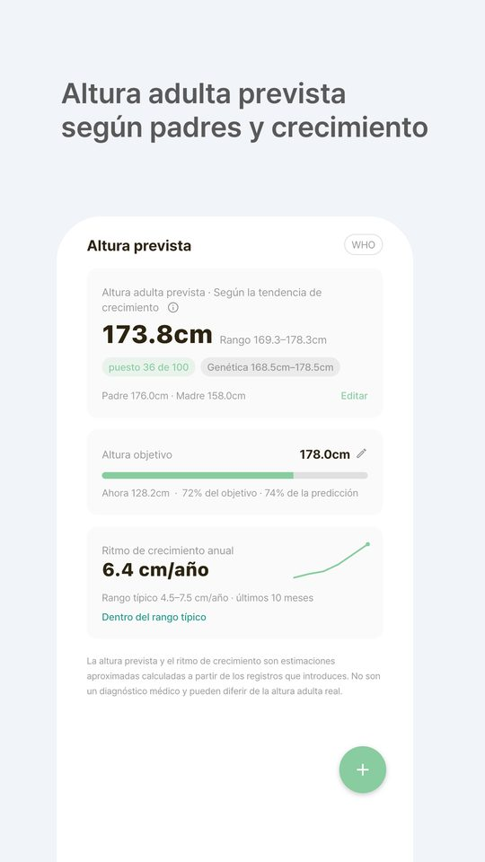
← desliza →
Mira dónde se sitúan altura, peso e IMC entre 100 niños de la misma edad en meses.
Altura adulta estimada según la altura de los padres y la tendencia, con margen de error.
Todas las mediciones anteriores y cuánto ha crecido, de un vistazo.
Altura, peso, IMC y percentil directamente en la pantalla de inicio.
Cada niño tiene su perfil, registros y gráficas.
Sin cuenta. Los datos de tu hijo nunca se envían a nuestros servidores.
Cuando crías a un hijo, a veces un número que parece cualquier cosa se te queda en la cabeza.
"¿Mi hijo está creciendo bien?" "Comparado con otros niños de su edad, ¿más o menos dónde está?" Los días que volvía de una revisión, buscaba las curvas de crecimiento o repasaba los registros anteriores.
Pero al buscarlo de verdad, era difícil y complicado: no era fácil ver de un vistazo la información que necesitaba.
Así que decidí, sin más, hacer yo misma lo que quería usar. Que, a partir de las curvas de crecimiento oficiales, fuera guardando los registros de mi hijo uno a uno y me dejara ver en una sola pantalla cuánto ha crecido hasta ahora.
La altura de un solo día puede no parecer gran cosa. Pero al mirar atrás, cada uno de esos números es tiempo que mi hijo ha pasado creciendo.
Ojalá Grovii pueda ser un pequeño cuaderno que te ayude a mirar el crecimiento de tu hijo con un poco más de calma.
Y ojalá le sirva a todos los padres y madres que crían con el mismo corazón.
Elige la curva de crecimiento oficial que prefieras — OMS, CDC (EE. UU.), KDCA (Corea), MHLW (Japón), NHC (China), UK90 (Reino Unido). La edad se cuenta en meses cumplidos, igual que las curvas.
¿Es realmente gratis?
Sí. Grovii se puede usar gratis. Se financia con publicidad, y la información de crecimiento de tu hijo nunca se usa para anuncios.
¿Es precisa la altura prevista?
La altura adulta prevista es una estimación orientativa calculada a partir de la tendencia de crecimiento actual de tu hijo y la altura de los padres. Si necesitas una evaluación precisa del crecimiento o la salud de tu hijo, consulta a un pediatra.
¿Qué curvas de crecimiento usa?
Puedes elegir curvas de crecimiento oficiales como la KDCA de Corea, la OMS y los CDC.
¿Están seguros los datos de mi hijo?
No hace falta registrarse, y los registros de crecimiento se guardan solo en tu dispositivo. Consulta la Política de Privacidad.